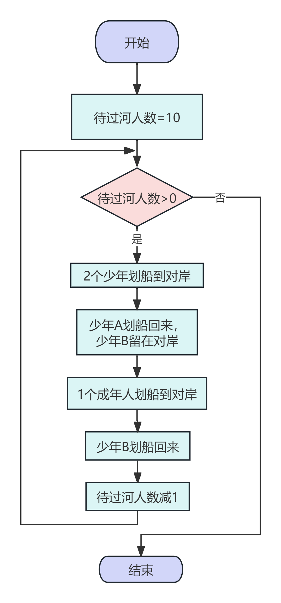
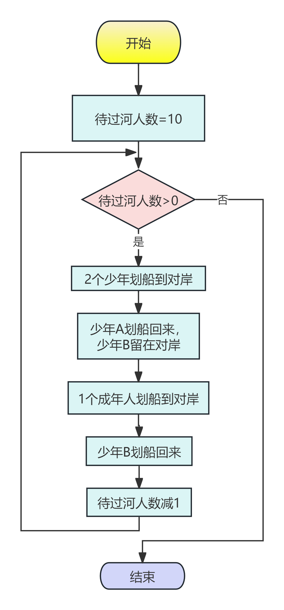

🎯 学习活动2：用流程图梳理过河的过程
只需要1个成年人过河就能解决多人过河的问题，循环10次，就可以把10个成年人送到对岸。
下面用流程图梳理解决这个问题的过程。
📊 什么是流程图？
流程图是用图形符号来表示解决问题步骤的一种方法。它可以帮助我们清晰地看到整个过程。
开始/结束
椭圆形表示开始或结束
处理过程
矩形表示处理步骤
判断
菱形表示判断条件
→
箭头表示流程方向
🎨 10人过河流程图

💡 点击图片可放大查看
×

🎮 互动体验：跟着流程图过河
过河动画演示
待过河人数：10
当前步骤：开始
左岸
右岸
流程图同步演示

💡 黄色高亮显示当前执行的步骤
🤔 进一步思考
问题1：如果是20个成年人过河就需要更多次过河吗？
是的！如果修改流程图中的初始值，把"将过河人数=10"改为"将过河人数=20"，就可以解决20个成年人过河的问题。
这就是循环的威力：相同的步骤重复执行，就能解决更大规模的问题！
问题2：日常生活中还有哪些问题可以用循环来解决？
生活中有很多循环的例子：
- 🍽️ 洗碗：重复"拿起碗→清洗→放好"的步骤，直到所有碗都洗完
- 📚 做作业：重复"读题→思考→解答"的步骤，直到所有题目都完成
- 🌳 种树：重复"挖坑→放树苗→填土→浇水"的步骤，直到种完所有树
📌 本节总结
流程图可以清晰地表示解决问题的步骤和过程
循环结构可以让相同的步骤重复执行，解决批量问题
判断条件决定了循环何时结束